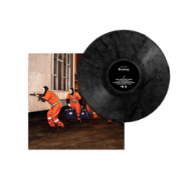

Racionais MC's é um grupo brasileiro de rap fundado em 1988. É formado por Mano Brown, Ice Blue, Edi Rock e KL Jay. É o maior grupo de rap do Brasil, e está entre os grupos musicais mais influentes do país e da música brasileira. Suas canções demonstram a preocupação em denunciar a destruição da vida de jovens negros e pobres das periferias brasileiras e o resultado do racismo e do preconceito, ao sustentarem a miséria diretamente ligada com a violência e o crime. Temas como a brutalidade da polícia, do crime organizado e do estado, bem como o preconceito, as drogas e a exclusão social são recorrentes nas letras do conjunto. Embora inicialmente conhecido apenas na capital paulista, o grupo conseguiu alcançar sucesso nacional e internacional a partir dos álbuns Raio X Brasil (1993), Sobrevivendo no Inferno (1997) e Nada como um Dia após o Outro Dia (2002).
Nascido no final da década de 1980, o nome do grupo foi inspirado no disco Tim Maia Racional de Tim Maia. A primeira gravação do grupo foi feita em 1988, quando o selo Zimbabwe Records lançou a coletânea Consciência Black, Vol. I. Neste LP, apareceram os dois primeiros sucessos do grupo: "Pânico na Zona Sul" e "Tempos Difíceis". Ambas canções apareceriam dois anos depois em Holocausto Urbano, primeiro disco oficial do grupo e cujas letras denunciam o racismo e a miséria na periferia de São Paulo, marcada pela violência e pelo crime.
Após esse álbum, os Racionais MC's tornaram-se bem conhecidos dentro da cena rap da periferia paulistana e da Grande São Paulo. Essa popularização fez com que os integrantes dos Racionais MC's passassem a desenvolver trabalhos especialmente voltados para comunidades pobres, dentre os quais um projeto criado pela Secretaria Municipal de Educação de São Paulo, em que o conjunto realizou palestras em escolas sobre drogas, racismo, violência policial entre outros temas. Também participariam nos anos seguintes de diversos concertos filantrópicos em benefício de HIV positivos, campanhas de agasalho e contra a fome, além de atuarem em protestos como o aniversário da Abolição dos Escravos no Brasil.
1991-1993
Em 1991, os Racionais MC's abriram o show do pioneiro Public Enemy, um dos mais famosos grupos de hip hop americano, no Ginásio do Ibirapuera, em São Paulo. No final de 1992, foi lançado o segundo LP do grupo, Escolha o seu Caminho. No ano seguinte, o grupo participou do projeto "Música Negra em Ação", realizado no Teatro das Nações em São Paulo, e gravou o disco Raio X Brasil, terceiro disco do conjunto, lançado em uma festa na quadra da escola de samba Rosas de Ouro para um público estimado de 10 mil pessoas. Canções deste disco como "Fim de Semana no Parque" e "Homem na Estrada" (ambas de Mano Brown) fizeram grande sucesso em bailes de rap e nas rádios do gênero em todo o país.

1994-2002
Principal atração do Rap no Vale, um concerto de rap realizado no final de 1994, no Vale do Anhangabaú (centro de São Paulo), e que terminou em confusão e quebra-quebra, os membros do grupo foram presos pela polícia sob acusação de incitação à violência - a violência policial é um tema frequente nas letras do grupo. Ainda naquele ano, a gravadora Zimbabwe lançou a coletânea Racionais MC's. No final de 1997, foi lançado o disco Sobrevivendo no Inferno, pelo selo Cosa Nostra (do próprio grupo), que vendeu cerca de 500 mil cópias. Dentre os grandes sucessos deste álbum estão "Diário de um Detento", "Fórmula Mágica da Paz", "Capítulo 4, Versículo 3" e "Mágico de Oz". Com esse disco, os Racionais MC's deixaram de ser um fenômeno na periferia paulistana para fazer sucesso entre outros grupos sociais. Apesar disso, o grupo adotou uma postura antimídia. Um exemplo notório foi a cerimônia de premiação do Video Music Brasil, da MTV Brasil, quando a emissora teve muita dificuldade para levar o grupo para a premiação e Mano Brown ressaltou que a mãe havia lavado muita roupa pra '"playboy" pra fazê-lo chegar até ali. Em 2002, o grupo lançou Nada Como um Dia Após o Outro Dia, disco duplo que, assim como seu antecessor, foi bem recebido pela crítica. Entre os maiores sucessos estão "Vida Loka I", "Vida Loka II", "Negro Drama", "Jesus Chorou" e "Estilo Cachorro". Quatro anos depois, o grupo lançou 1000 Trutas, 1000 Tretas, seu primeiro DVD. Em 5 de maio de 2007, os Racionais fizeram um show na Virada Cultural de São Paulo, mas os fãs da banda entraram em confronto com os policiais, transformando o evento em um campo de batalha.
2012-2022
Em 2012, o grupo lançou a música "Mil Faces de um Homem Leal", composta para o documentário sobre a vida do guerrilheiro Carlos Marighella. Ainda naquele ano, eles participaram do MTV Video Music Brasil, tendo feito o show de encerramento do evento. Comemorando 25 anos de carreira, o grupo realizou uma turnê por várias cidades do Brasil. A turnê foi produzida pela produtora oficial do grupo, a Boogie Naipe, e foi premiada como a melhor do ano pelo SuperJúri do Prêmio Multishow de 2014. O grupo anunciou no último dia 23 de outubro de 2014 o lançamento de um novo álbum de estúdio para o dia 20 de dezembro de 2014. Em 25 de novembro de 2014, o grupo lançou o sexto álbum de estúdio Cores & Valores, o primeiro com músicas inéditas em 12 anos, e também o primeiro a ter influência do gênero trap. Em 2018, a banda ganhou destaque por ter seu álbum Sobrevivendo No Inferno (1997) selecionado como material para o vestibular de 2020 da Unicamp. Segundo a instituição, “diferentes gêneros e extensões, de autores das literaturas brasileira e portuguesa”. Em 2019 o grupo comemorou 30 anos de carreira com vários shows pelo Brasil, a turnê encerrou em S.Paulo com 3 shows lotados no Citibank Hall. Em 2022, os Racionais participaram pela primeira vez do festival "Rock in Rio", um dos maiores festivais de música do mundo. O grupo se apresentou no sábado, dia 3 de setembro, no Palco Sunset. O show teve início com projeções do filme "The Warriors", conhecido no Brasil com o título "Os Selvagens da Noite", clássico dos anos 1980, o filme procura refletir sobre as origens da violência na sociedade. A projeção continuou com imagens do grupo no metrô de São Paulo, quando o trem chega na estação Capão Redondo, os Racionais "descem" do trem da projeção e entram no palco do Rock in Rio. Pelo fato de o grupo sempre buscar fazer críticas e reflexões sociais, pode-se interpretar o paralelo feito entre o filme e as imagens em São Paulo "onde há um acordo para que gangues de diversas partes de Nova York se reúnam sem armas ou atos violentos, nesta noite a plateia representava as diferentes "tribos" do país".
| Ano | Prêmio | Categoria |
|---|---|---|
| 1998 | VMB | Escolha da Audiência |
| 2002 | Prêmio Hutúz | Grupo ou Artista Solo |
| 2006 | Ordem ao Mérito Cultural | Música |
| 2009 | Prêmio Hutúz | Melhores artistas da década |
| 2012 | VMB | Clipe do Ano |
| 2014 | Prêmio Multishow | Melhoor Show com a Turnê de 25 anos |
| 2015 | Rolling Stone Brasil | Melhor Álbum |